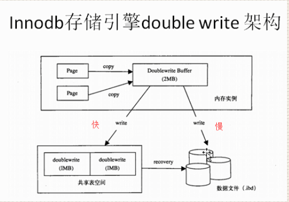

innodb特性
插入缓存（insert buffer）
二次写 （double write）
自适应哈希索引（adapter hash index）
异步IO（async IO）
刷新邻接页
innodb特性
插入缓存（insert buffer）
对非聚集索引的插入或者update，purge等操作，并非每一次直接插入索引页，而是把若干对于同一页面的更新缓存起来合并为一次操作，随机IO --> 顺序IO，避免随机IO带的性能消耗，提高写性能。
原理：
先判断插入的非聚集索引页是否在缓冲池中
如果在，直接插入
如果不在，想放到插入缓冲区，欺骗数据库，这个非聚集的索引已经插入到叶子节点了
然后再以一定的频率执行插入缓冲和非聚集索引页子节点的合并操作
条件：
索引是辅助索引
索引不是唯一的
注意：在写密集的情况下，插入缓冲会占用过多的缓冲池内存，默认最大可以占用1/2的缓冲池内存
二次写 （double write）
带给innodb存储引擎数据的可靠性
起因：当数据库宕机时，可能发生数据库写一个页面，而这个页只写了一部分，这就是所谓的部分写失效（partial page write），它会导致数据丢失，这时是无法通过重做日志恢复的，因为重做日志记录的是对页的物理修改，如果页本身已经损坏，重做日志也无能为力。
恢复原理：mysql在恢复的时候是通过检查page的checksum来决定这个页是否需要恢复，checksum就是当前这个页最后一个事务的事务号，如果系统找不到checksum，mysql就无法对该行数据进行写入操作

两次写需要额外添加两个部分：
1）内存中的两次写缓冲（doublewrite buffer），大小为2MB
2）磁盘上共享表空间中连续的128页，大小也为2MB
其原理是这样的：
1）当刷新缓冲池脏页时，并不直接写到数据文件中，而是先拷贝至内存中的两次写缓冲区。
2）接着从两次写缓冲区分两次写入磁盘共享表空间中，每次写入1MB
3）待第2步完成后，再将两次写缓冲区写入数据文件
这样就可以解决上文提到的部分写失效的问题，因为在磁盘共享表空间中已有数据页副本拷贝，如果数据库在页写入数据文件的过程中宕机，在实例恢复时，可以从共享表空间中找到该页副本，将其拷贝覆盖原有的数据页，再应用重做日志即可。
自适应哈希索引（adapter hash index）
innodb存储引擎会监控对表上索引的查找，如果观察到建立哈希索引可以带来速度上的提升，则建立哈希索引，所以称为自适应的。
自适应哈希索引通过缓冲池的B+树构造而来，因为建立的速度很快，而且不需要将整个表都建立哈希索引，innodb会自动根据访问频率和模式来为某些页建立哈希索引。
启用自适应哈希索引后，读写速度提高两倍，辅助索引的链接操作，性能提高五倍。
数据库自动优化，不需要认为干预。
可以通过 show engine innodb status\G来查看自适应哈西索引的使用情况。可以使用innodb_adaptive_hash_index来禁用和启用hash索引，默认开启。
异步IO（async IO）
为提高性能，采用异步IO来处理磁盘操作，好处是可以进行合并IO；
刷新邻接页
当刷新一个页的时候，innodb存储引擎会检测该页所在区的所有页，如果是脏页，就一起进行刷新。
如果使用的是固态硬盘，关掉它可以有效的提高性能。